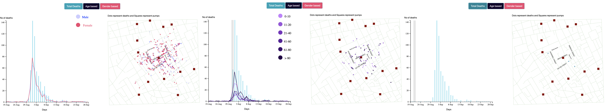
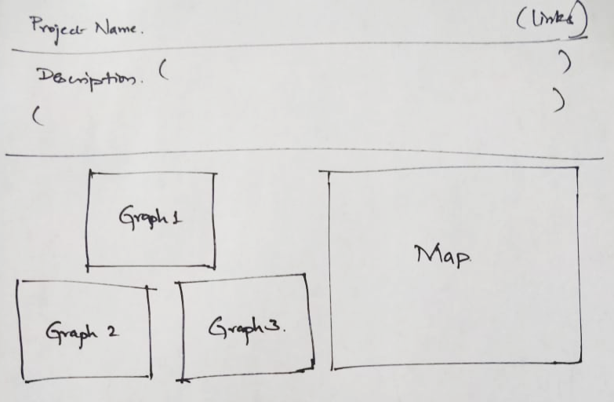
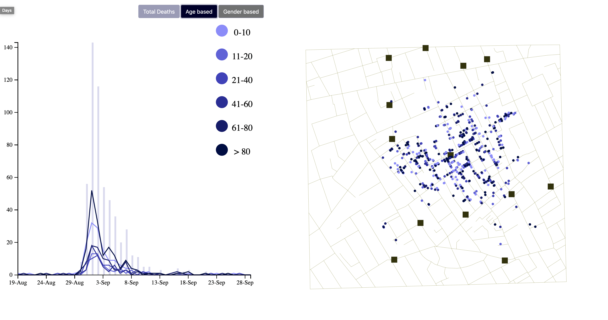
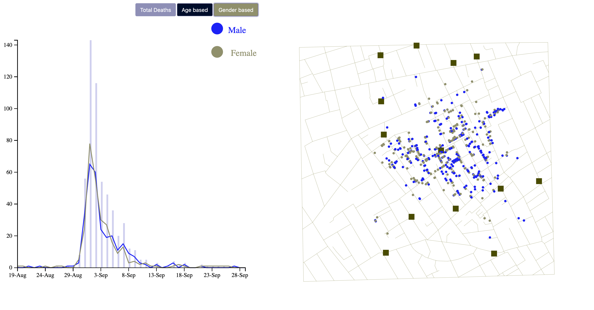

Project 1 - Documentation - Dr. John Snow's map of London's 1854 cholera epidemic using D3
H-517_VISUALIZATION DESIGN, ANALYSIS AND EVALUATON
Abhinav Sikharam, MS-HCI, IUPUI
Design process
- Gathered project requirements and analyzed the given datasets, csv files.
- Brainstormed various ideas to represent the datasets and map.
- Made initial paper prototypes and sequential process for interactions.
- Started to translate the designs into code using HTML layouts and other elements.
- Identified and correlated different datasets to develop map and graph interactions using buttons.
- Refined the initial plan and merged different graphs into one to overlap datasets to gather more insights.
- Performed an end-to-end user testing to cross check functionalities and how to formulate insights from visualizations.

Figure 1: Final Visualizations
Initial Design Sketches and Ideation
I gathered the project requirements and segregated them into sections. Made a list of elements that need to go on to the
interactive visualization page. This way, I was following a sequential way to implement each element step by step. Looking
at the requirements, I initially made paper sketch to put three separate graphs for showing Total deaths, deaths by age,
deaths by gender to the left and Map on to the right side.

Figure 2: Paper sketch of initial plan.
Implementation
Soon after laying out the plan and layout sketch, I started to write the skeleton code for the visualization.
Initial visualization contains a small description of the project, a link to documentation and video.
A map with the streets from the json in green color lines. I chose to put the map in green colored lines
as it represents the landscape and green lines would be a fit for the streets.

Figure 3: Basic Implementation of Map
Then imported the pumps.csv to display the locations of the pumps on the map and showed the pumps as dark red squares.
The reason to select dark red color is to indicate the hazard points as the cholera transmission was initiated at these locations.
Similarly, imported the deaths_age_sex.csv to point the deaths on the map. I have chosen to display the deaths on the map with blue circles.
This way I used tones of the three primary colors on the map.

Figure 4: Implemented Map and pumps

Figure 5: Map is visualized with Total deaths and Pumps
Looking back at the datasets, I initially planned to make three different graphs to show the deaths, age differences and gender.
However, I opted to implement only one graph and overlapping the ages and gender lines on to the death by day.
Rationale: Upon loading the coordinates and demographics for each death. I assumed these data to be provided in the order
in which the victim died. This way I can correlate it to deathdays.csv and get some better insights on deaths by different ages and genders on a particular day.
I planned to implement a single graph with three different buttons. When the user clicks on age-based button or gender based, the line graphs shall be
overlapped on the deaths per day graph.

Figure 6: Revised visualization screen design
This way, I went ahead and implemented a single bar graph using the same blue color used for circles (total deaths) on the map.
Once this is done, I implemented the age-based button and created 6 live graphs. As ages are ordered data, I chose the colormap
to be varying monotonically in luminance. While the gender-based visualization comes under categorical data, I have put male as
blue and female as pink with different hue.

Figure 7: Implemented a bar-graph and three buttons on top


Figure 8: Implemented Age based line graph with monotonically varying luminance


Figure 9: Implemented gender-based line graph with different hue colors
Rationale for arranging charts
Overlapping of graphs over the timeline gives the user the ability to visualize the trend of deaths in different locations on specific days.
Also, by implementing the hover functionality over the bar graph gave the opportunity to the user to analyze and see the deaths on a particular
day with respect to ages or gender.

Figure 10: Hover on the bar-graph shows the deaths on map till that date.
Discoveries
- Which age groups have more deaths?
One of the interesting discoveries is that especially two age groups (0-10) and > 80 were highly vulnerable to cholera epidemic in London.
When I selected only these age groups, I observed that they are the highest in number who died in August and September months.
While other age groups are less in number

Figure 12: Selected only two age groups which are highly vulnerable
- Which gender have more deaths?
Upon looking at the graph, deaths of both male and female looks equal on most of the dataset.
However, females were more vulnerable to cholera as the number of deaths spiked more than men during the peak months of August.

Figure 13: Females are little more vulnerable than Males
- Who were the early victims of cholera epidemic in the map location?
Upon hovering on to 31st August, We can specifically see light and dark purple colors, indicating that the early victims were children below age 10 and elderly from 61to 80.

Figure 14: Early victims were children and elder people
Color Blindness Test
As per the accessibility standards, I have tested the visualizations for both Protanopia and Deuteranopia cases in color blindness test using a chrome extension named rgblind.
I have carefully chosen the graphs and color coded which can be identified in both the cases. The results of color blindness test simulations were convincing as all the
elements in the graph and on map can be easily differentiated in both cases with ease.

Figure 15: Differentiation of ages in Protanopia case

Figure 16: Differentiation of gender in Deuteranopia case
References
- https://d3js.org/
- https://www.w3schools.com/graphics/svg_intro.asp
- https://www.w3schools.com/js/
- https://developer.mozilla.org/en-US/docs/Web/JavaScript
- https://github.com/d3/d3
- http://www.rgblind.se/url
- https://coolors.co/
- http://bl.ocks.org/phil-pedruco/9032348
- https://bl.ocks.org/d3noob/a22c42db65eb00d4e369